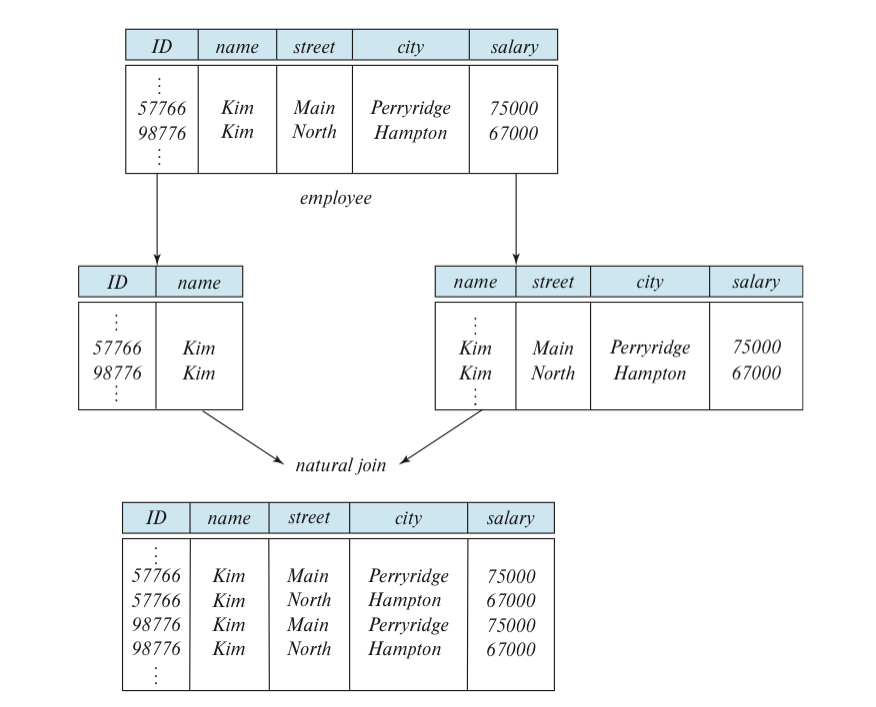
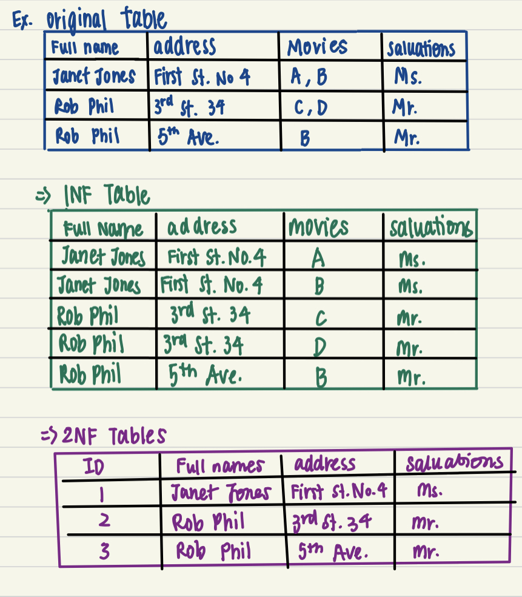
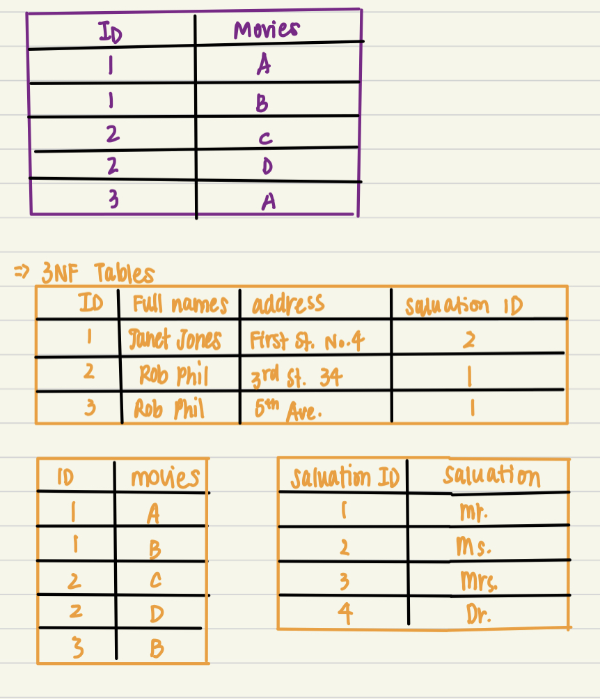
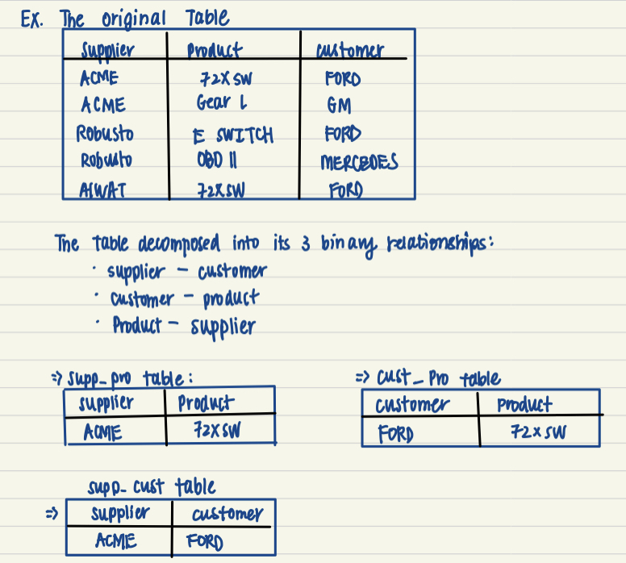

7 Relational Database Design
7.1 Features of a Good Relational Design

Loss of info. due to a bad Decomposition\[\\[.1cm]\]
LOSSY DECOMPOSITION- a bad decompositonLOSELESS DECOMPOSITION- no loss of info. by replacing a relation R w/2 relations R1 & R2- for a lossy decomposition, we would get a superset of the original relation
\[\\[.1cm]\]
NORMILIZATION- goal is to generate a set of tables that allow us to store info. w/o unnecessary redunancy, & yet allows us to retrieve info. easilyGeneral steps:
- Decide if a table is in “GOOD FORM”
- If NOT, decompose it into a num. of smaller relational schemas in a normal form
7.2 Decomposition using Functional Dependencies
LEGAL INSTANCE- of a relation is one that satifies all real-world constraintsEx. students & instructors at a university must have an unqiue ID
7.3 Normal Forms
NORMILIZATION- a technique of orgainizing data in a database by decomposing tables to eliminate redunancy, & undesirable characteristics (insertion/update/deletion anomalities)- the process takes large tables, divides them into smaller tables, and link them using relationships
- proposed by Edgar Codd, inventor of the relational model \[\\[.1cm]\]
- All the normal forms:
- 1NF - ensure atomic and unique values
- 2NF - removes partial dependencies
- 3NF - remove transitive dependencies
- BCNF/3.5NF
- 4NF - remove multi-valued dependencies
- 5NF - remove join dependencies
- 6NF - not standarized
\[\\[.1cm]\]
- 1NF rules:
- each cell contain a single value
- each entry is unqiue
\[\\[.1cm]\]
- 2NF rules:
- be in 1NF
- have a single column primary key
- Primary Key - a single column value used to identify an entry uniquely
- cannot be NULL
- must be UNIQUE
- should rarely be changed
- must be given a new value when a NEW entry is inserted
- Composite Key - key composed of multiple columns to uniquely identify an entry
\[\\[.1cm]\]
- 3NF rules:
- best for most pratical applications
- be in 2NF
- have no transitive functional dependencies
Transitive functional dependencies - when changing a non-key column, might cause any of the other non-key columns to change
\[\\[.1cm]\]

Example of 1NF
Example of 2NF & 3NF\[\\[.1cm]\]
- BCNF:
- section under construction
\[\\[.1cm]\]
- 4NF rules:
- be in 3NF
- table should not have multivalued dependencies
Conditions for Multi-valued dependencies (all must be true):
- for a dependency A -> B (for a single A), multiple values of B exist
- have at least 3 columns
- for the other 2 columns, B & C, they should be independent
MVD occurs due to bad database design
\[\\[.1cm]\]
- 5NF (a.k.a PJNF or Project Join Normal Dependency) rules:
- be in 4NF
- not have Join Dependency
Join Dependency - when a table can be broken down into 2 seperate tables & no data is loss and when the 2 tables can be joined w/o no new entries being created

Example of 5NF\[\\[.1cm]\]
- from these 3 decomposed tables, info. is lost b/c we do NOT know definitive that Ford
brought 72XSW from ACME since in the original table, Ford also brought 72XSW from ALWAT
- thus, the orginal table does not have join dependency and is already in 5NF